USER GUIDE
INSTALLATION OF CONTAINERS
The open source github repository
The simulator software is available through the github link https://github.com/greencharge/gcsimulator.
The repository contains scripts to build locally dockers containers containing the different components shown in the previous sections. In particular, in addition to the source code of the simulator engine and of the GUI, a dummy EMS implemented in javascript is provided for testing purpose. It is the same software that runs in the web page of the integration tool. Many docker compose scripts to instantiate the simulator with or without the GUI.
The repository contains also the installation and user manual, the API documentation and the software. We invite the reader to refer to the github repository to get the update version of the software documentation.
How to build the simulation platform
The only requirements to build the simulation platform is the installation of docker and of docker-compose, on any windows, Linux or Apple machine.
The easiest way to build the simulation platform is to use the docker-compose command.
docker-compose up |
A docker-compose configuration is provided to download the images and to instantiate all the containers, which communicate on a virtual network.
Nevertheless, the user can build the container image locally. This is the recommended solution to work with the last updated image. In this case, the images must be built before running the docker-compose command:
cd Dockers/gcsim docker build . --tag gcsim cd ../Dockers/gcscheduler docker build . --tag gcscheduler docker-compose up |
N.B.: At the state of art the GUI is provided only as a docker image in docker-hub
SCENARIO’S GENERATION
In this section, we describe in detail the steps to configure the simulation environment using the developed GUI. The configuration should include the different involved energy actors: Producers, Consumers, Prosumers. Each of them is characterized by a specific energy profile that, in some cases (i.e. the PVs) that profile is automatically generated.
The final goal of the configuration phase is, regardless of where the data comes from (from the GUI or from the pilots) to produce the files neighbourhood.xml and loads.xml.
For the evaluator, a Graphical User interface is provided. Its extension with additional plugins for the automation of the evaluation is an ongoing work.
At the state of art, we provide a deployment configuration that allows for execution the GUI in a docker container, which can be accessed by a novnc web interface.
The strength of this deployment configuration is that the user does not need to install anything a part docker and docker-compose on its machine, and can run the simulation using the browser.
This image is particularly useful since the configurator GUI was developed in python and would only be available via the operating system interface and not via the web.
However, this container allows the screen content of an O.S. to be displayed on a web page. This expedient allows the use of this GUI in a more flexible way and directly from a web browser. The docker containing the GUI is automatically launched at the execution of the docker-compose up command and exposes itself on a web page reachable by the browser at the address localhost: 6080.
The web page will show an operating system where the simulator GUI is pre-installed and executable. Interface examples are shown later in the paragraph on how to create a scenario via the GUI.
An example of the web screen that will open when the container is run is the following:
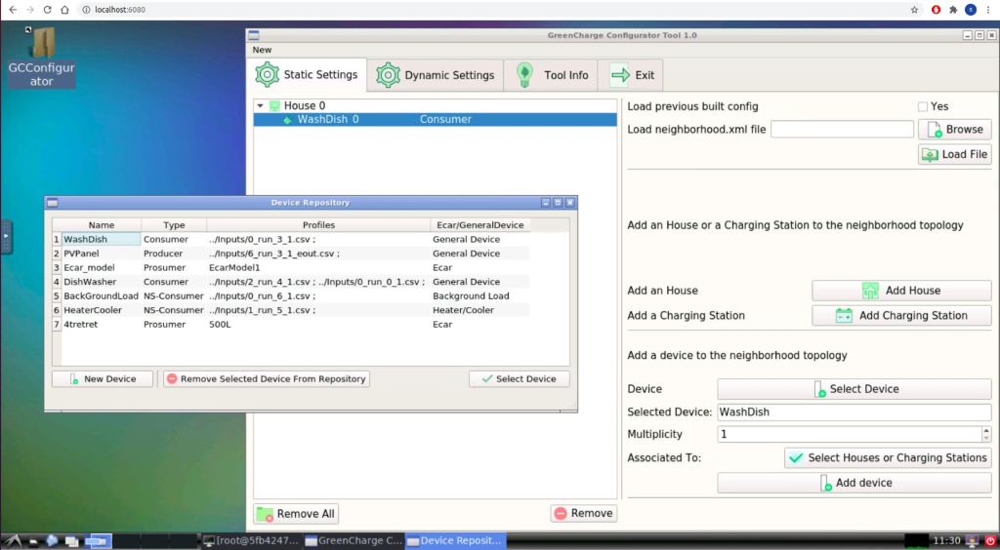
Figure 1 - The Web Page
As you can see from the screen, you have complete control of an operating system directly from a web browser.
Figure 2 - Control Panel
The first phase of a configuration scenario is to build topologically the neighborhood. In order to achieve the goal we have to open the Static Configuration Tab, as shown in the next figure:
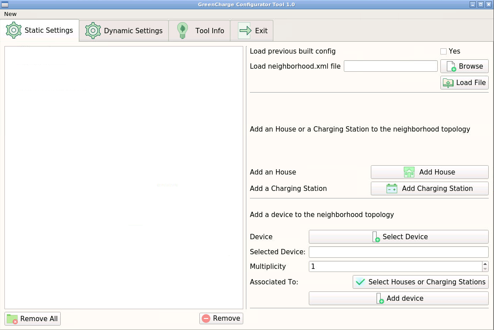
Figure 3 - Static Configuration
At the end of this phase we will build a neighborhood.xml file necessary to the simulator. We can load a prebuilt neighborhood.xml file directly choosing one from the browse button and than pressing the load button. Note that the is necessary to load only a file neighborhood.xml that is built according to the definition.
We can also build a new configuration from scratch and in order to do that we have to add how many houses and charging station we want through the add house and add charging station buttons. The screen will change as shown in the next figure.
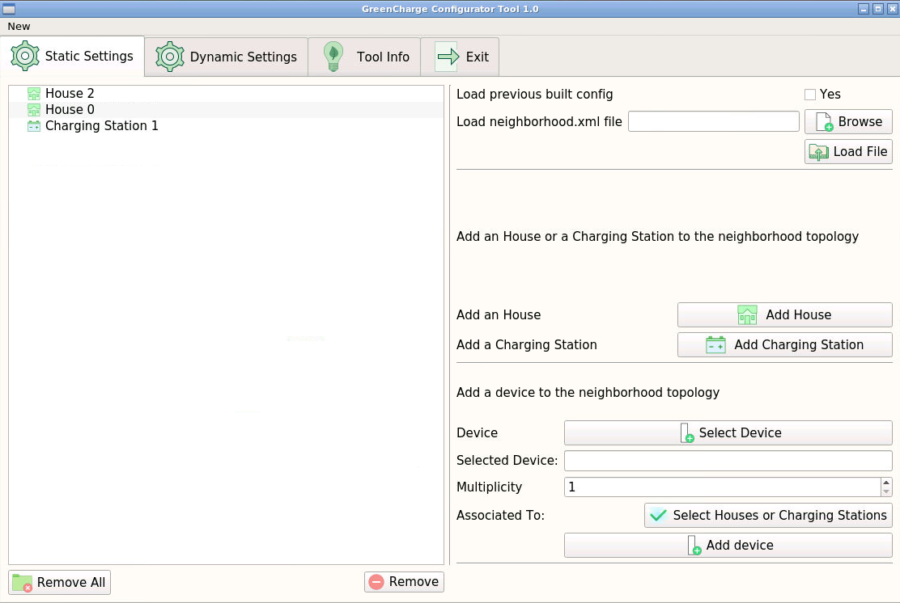
Figure 4 - Static Configuration with Energy Hubs
Add a Device to the neighborhood
In order to add a device to the neighborhood we have to press the select Device button, a window like the one in the next figure will appear:
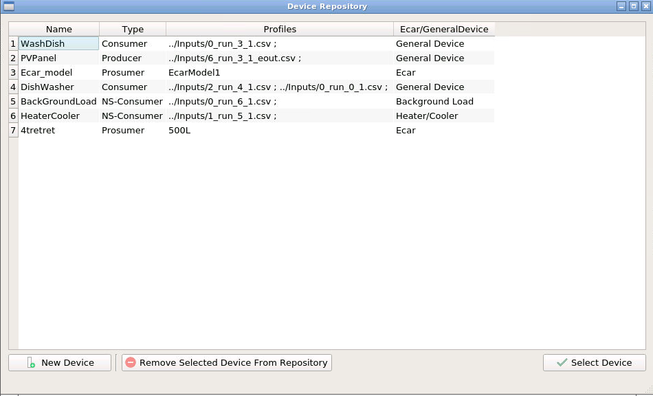
Figure 5 - Device Repository
From this table we can select a device previously created and then press on select Device to add it to the configuration or create a new device model by pressing the corresponding button.
In the latter case a new window will appear:

Figure 6 - Create New Device Window
In which you can select the type of device you want to add (background load, heater cooler, EV, generic schedulable load, battery, producer) giving only a name and a list of possible csv file containing the consumption or production timeseries if needed.
In the EV case we can also create a model from scratch and then select it to create a new car by pressing the corresponding button:

Figure 7 - Create New EV model Window
Once we have selected the device we want to add to the configuration it will be shown in the main window:
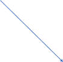 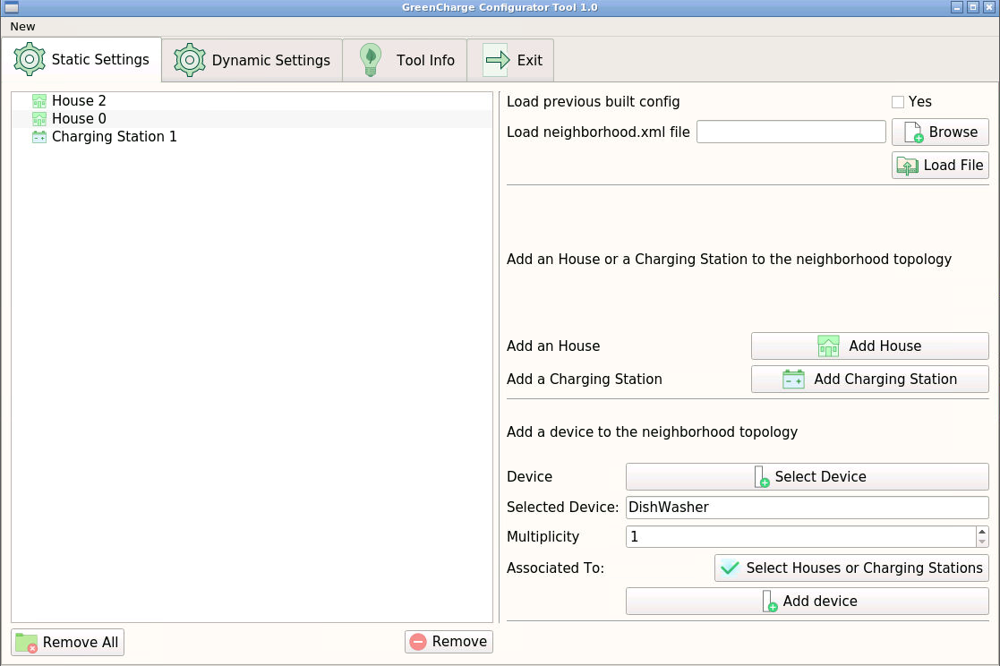
Figure 8 - Add device to scenario
At this point you have to select how many device of this kind you want to add using the multiplicity number picker and select to which house or charging station you want to assign your device by pressing the corresponding button and confirm the changes with the add device button.
You can repeat this workflow until you are satisfied with the topological conformation of the scenario.
How to setup up the events
Once the scenario is created we have to set up the events for each device we created previously.
You can load a previous created load.xml file doing the same done for the neighborhood.xml.
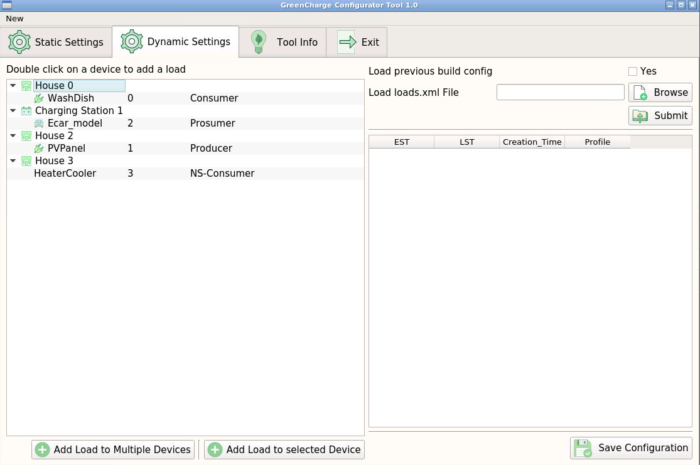
Figure 9 - Dynamic Settings
We can add events to device one by one or we can use the load to multiple device feature that allow you to select more than one device at each time (they must be of the same type e.g. ev, generic loads). The window that will appear depends on the type of device you mean to configure.
Schedulable Events
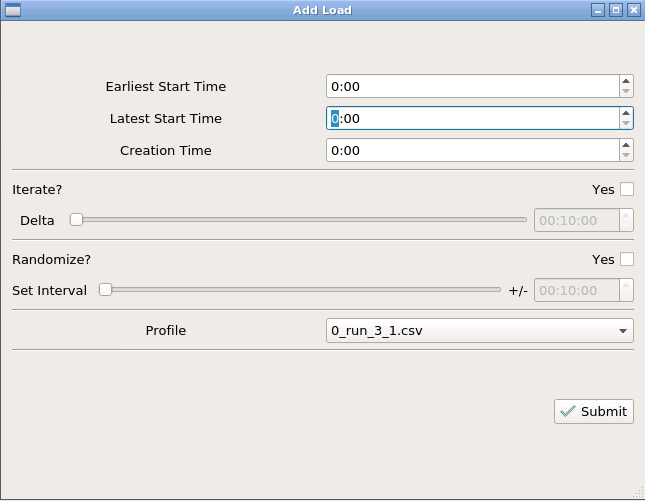
Figure 10 - Scedulable load events
For schedulable events we have to setup the earliest and the latest start time and the creation time. We can also choose to have the event repeat during the day and set after how long it should be repeated (using the delta bar). You can also choose to randomize the times by selecting an interval in which the times will be taken from. You have also to select a profile from the available profile list in the possible profile you set in the previous section.
EV Events
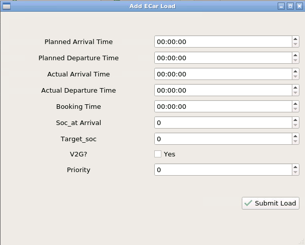
Figure 11 - EV Event
For EV you have to choose the arrival, departure and booking time but also the status of charge and the target status of charge.
Producer Events

Figure 12 - Producer Event
For producers events you have only to set the creation time and the production profile that the device has to perform.
Not schedulable Events
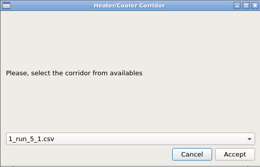
Figure 13 - N-S Event
For not schedulable events you have only to choose the consumption profile or, in the heater/cooler case, the timeseries with the minimum and the maximum energy consumption profile.
Start and Stop Simulations
Once all the events have been set it is possible to confirm the configuration by clicking on the save configuration button.
At this point, to start the simulation, all that remains is to set the day and the starting and ending time of the simulation session.
In the next sections we describe the main features of the GUI and through a complete Use Case diagram how to, from scratch, configure and start a simulation session.
The Control Panel represents a kind of dashboard of the tool to set and overlook a simulation session (fig. 14).
In this panel, after completing the configuration phase, we can fix the day and the starting time of the simulation. Pressing the start button activates all the simulation agents and starts the scheduling process. When the user presses on start, a start signal is sent to the simulator and scheduler which start their work.
In the GUI screen there is also a loading bar that shows the percentage of completion of the current simulation and, given the stochastic nature of the schedulers, it is possible to select how many times you want to repeat the same simulation for a single configuration. There is also a pause simulation button which allows the user to pause a simulation.
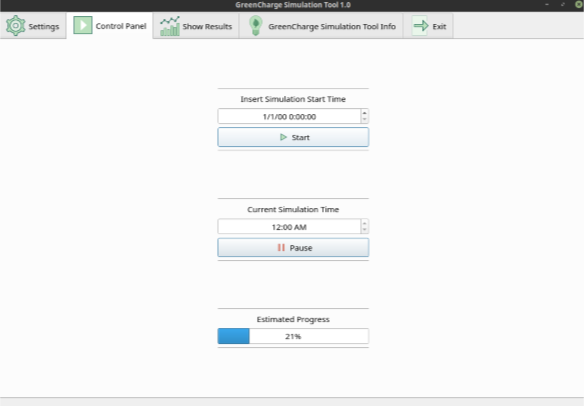
Figure 14 - Start a simulation
VISUALIZATION OF RESULTS
In order to generate a web report that summarizes the simulation results a specific command line utility is currently available. The report is exported as a web page that can be visualized by any browser offline. It can be distributed and shared as a common archive.
The report contains 5 sections.
The Parameters section shows a list of synthetic parameters whose value is computed from the results of the simulation. For each parameter it eventually shows the expected value, if for that simulation scenario these values have been provided in advance for testing purpose. The list of parameters is shown in Figure. XX.
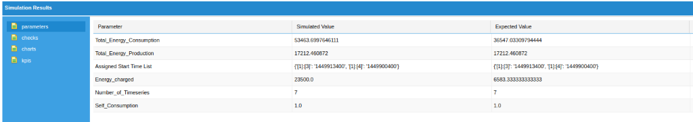
Figure 15 - Parameter Section
The Checks section visualizes the result of coherence checking process.
The list of checks is shown in Figure YY
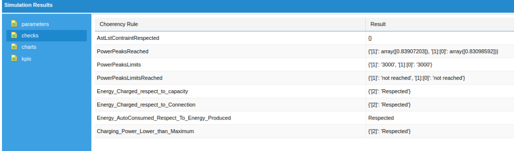
Figure 16 - Checks Section
The Charts section visualizes some charts which summarize the energy utilization by the neghiborhoud. In Figure ZZ we see the power consumed from the grid, the self-consumption and the power consumed by scheduled devices.
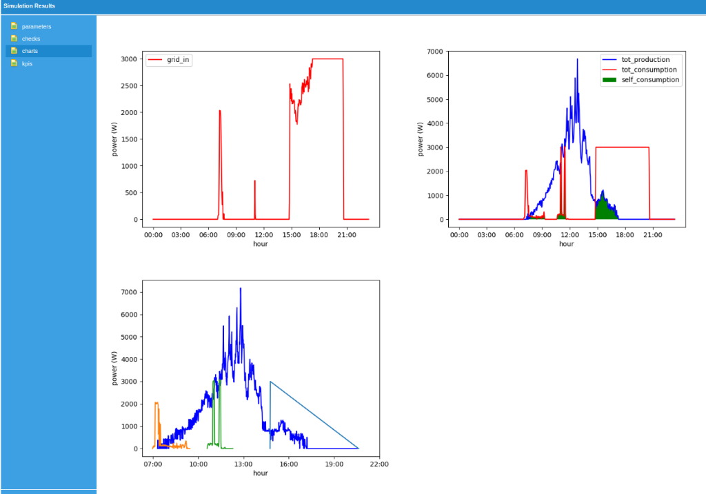
Figure 17 - Charts Section
Finally, the KPIs list the energy related GreenCharge KPIs which can be evaluated from the output of simulation.
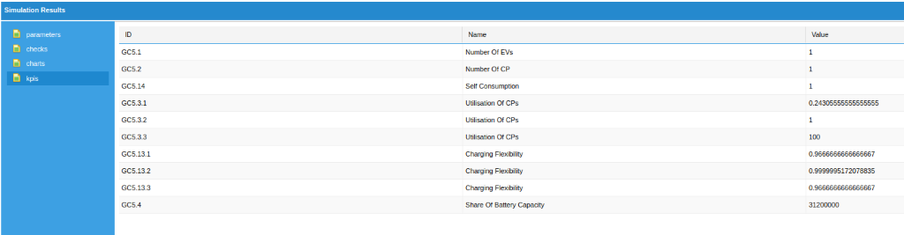
Figure 18 - Kpi Section